Genel Bilgiler
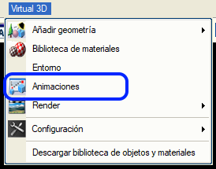
Animasyonlar, aktörlerin (kamera, araç, ışık vb.) sahne üzerindeki hareketini tanımlamayı sağlar. Bu animasyonlardan yola çıkarak, bir projenin vurgulanmak istenen yönlerini gösteren videolar oluşturulabilir.
Bir animasyon, bir sahnede yer alan bir grup aktörün zamansal bir diziyi takip ederek canlandırdığı roller bütününden oluşan bir senaryoya sahiptir.
Animasyon Moduna, Sanal 3B menüsündeki  butonu aracılığıyla erişilir. butonu aracılığıyla erişilir.
Genel Seçenekler
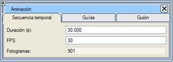İsim:
animasyon modunu bir isimle tanımlamayı sağlar.
Yorum: animasyon moduna açıklayıcı bir yorum eklemeyi sağlar.
 Animasyon modunu sahne dışında bir dosyaya kaydetmeyi sağlar. Animasyon modunu sahne dışında bir dosyaya kaydetmeyi sağlar.
 Kayıtlı bir animasyon modunu mevcut animasyon olarak yükler. Kayıtlı bir animasyon modunu mevcut animasyon olarak yükler.
Süre (sn): animasyonun ne kadar süreceğini tanımlar.
FPS: animasyonun her saniyesi için oluşturulacak kare sayısını (Frames Per Second) belirtir.
Toplam Kare: bu animasyon için oluşturulacak toplam kare sayısını gösterir.
Her bir karede, aktörlerin rollerini canlandırmasıyla o anki zamana karşılık gelen durum gösterilir.
Senaryo
 Senaryo, animasyondaki tüm rollerin bütününü kapsar. Her bir rol, bir geometri, bir kamera, bir ışık, bir nesne dizisi veya bir nesne klasörü olabilen bir aktör tarafından temsil edilir.
Senaryo, animasyondaki tüm rollerin bütününü kapsar. Her bir rol, bir geometri, bir kamera, bir ışık, bir nesne dizisi veya bir nesne klasörü olabilen bir aktör tarafından temsil edilir.
No: mevcut rolün listedeki sıra numarasını belirtir, canlandırılacağı zamanla bir ilgisi yoktur. "<" ve ">" butonları listede gezinmeyi sağlar.
Rol Ekle: listenin sonuna yeni bir rol ekler.
Araya Rol Ekle: mevcut rolün bulunduğu pozisyona yeni bir rol ekler ve mevcut rol ile sonrakileri bir sıra kaydırır.
Rolü Sil: mevcut rolü siler.
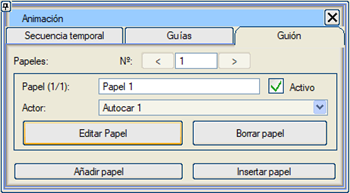
Rollerin hepsi birbirinden bağımsızdır, aralarında bir etki veya bağımlılık yoktur. Ancak görsel olarak olabilir.
Rol (n/m): rolün toplam roller içindeki sırasını ve açıklayıcı bir ismini belirtir.
Aktif: rolün animasyon sırasında canlandırılıp canlandırılmayacağını belirtir.
Aktör: rolü canlandıracak aktörü seçmeyi sağlar.
Rolü Düzenle: aktörün rolü boyunca sergileyeceği tüm özelliklerin belirtildiği diyalog kutusunu açar.
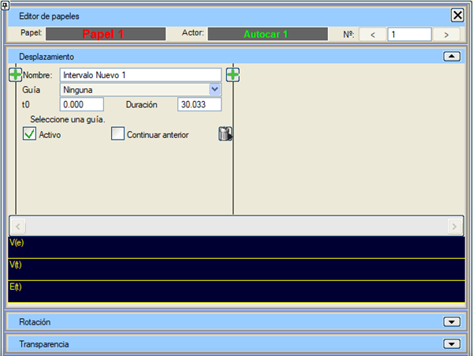
Rol Editörü
Bir rol düzenlendiğinde, aktörün zaman içinde gerçekleştireceği eylemlerin belirtilebileceği bir menü görüntülenir.
Aktörün türüne bağlı olarak farklı eylemler gerçekleştirilebileceği için, bu menünün aktörün türüne göre üç farklı "versiyonu" bulunur:
Bir kamera veya bir ışık:
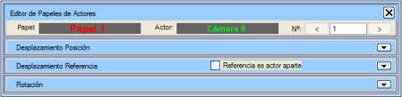
Veya bir nesne klasörü:
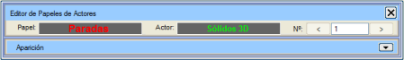
Ayrıca bu menü, pencerenin üst kısmında bulunan butonlar aracılığıyla animasyonun farklı rolleri arasında gezinmeye veya sıra numarasına göre belirli bir role erişmeye olanak tanır.
Geometrik Nesnelerin Rol Editörü
Geometrik nesneler, değişen özelliklerine bağlı olarak dört farklı türde rol üstlenebilirler:
- Nesnenin zaman içindeki olası konumlarını belirleyen yolları veya "kılavuzları" takip etmesi sağlanarak konumu değiştirilebilir.
- Yönelimi veya dönüşü değiştirilebilir.
- Şeffaflığı değiştirilebilir.
- Penceredeki "belirme" derecesi değiştirilebilir.
- Aynı anda birden fazla özelliği değiştirilebilir.
Bu özelliklerden herhangi birini değiştirecek bir eylem eklemek için ilgili seçenek açılır.
Öteleme
Eğer Öteleme açılır menü butonuna tıklanırsa, bu nesneyi sahne boyunca hareket ettirecek eylemler gösterilir. Başlangıçta hiçbir eylem yoktur, ancak butonuna tıklayarak eklenebilir.
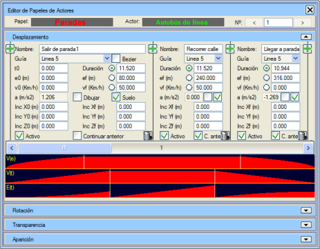
butonları, diğer herhangi iki eylem arasına veya eylem dizisinin sonuna eylem eklemeyi sağlar. Her eylemde:
- İsim alanı, eylemin ne olduğunu kısaca tanımlamaya yarar.
- Kılavuz alanı, nesnenin hareket etmek için takip edeceği kılavuzun seçilmesini sağlar. Bir kılavuzu takip ederken, nesnenin "ön" kısmının yönelimi kılavuza teğet olacaktır.
- Bezier onay kutusu, kılavuzun bir Bezier eğrisi olarak mı yoksa sadece yumuşatılmış bir çizgi olarak mı kullanılacağını belirtir.
- t0 ve Süre alanları, sırasıyla eylemin başlangıç anını ve ne kadar süreceğini belirtir. Bu zamanlar saniye cinsinden ifade edilir.
- e0 ve ef alanları, nesnenin kılavuz uzunluğu boyunca t0 anında ve bu eylem bittiğinde sahip olacağı konumu belirtir. Bu konumlar, kılavuzun ilk noktasından itibaren kılavuz üzerinde ölçülen metre cinsinden ifade edilir.
- v0 ve vf alanları, nesnenin t0 anında ve bu eylem bittiğinde sahip olacağı hızı belirtir. Bu hızlar km/sa cinsinden ifade edilir.
- a alanı sadece bilgilendirme amaçlıdır; bu eylemin yürütülmesi sırasında başlangıç hızından son hıza geçmek için gereken ivmeyi gösterir. Bu ivme sabit kabul edilir ve m/s2 cinsinden ölçülür.
- Süre, ef ve vf alanlarının yanında, diğerleri değiştirildiğinde bu 3 değerden hangisinin otomatik olarak hesaplanacağını belirten bir seçim butonu bulunur. Şu formüller takip edilir:
vf = v0 + a × t
ef = e0 + v0 × t + 0.5 × a × t2
- Yolu Çiz onay kutusu, eylem sırasında nesnenin bulunacağı noktaların sahnede gösterilmesini sağlar. Ayrıca, eylemin geçtiği tam saniyelere denk gelen konumlar farklı bir renkle ve ilgili metinle işaretlenir. Bu bilgi, bir animasyon oluşturulurken görünmez.
- Zemini Takip Et onay kutusu, nesnenin altında bulunan geometrinin yüzeyine uyum sağlayarak kılavuzu takip edeceği anlamına gelir.
- Inc. X0, Inc. Xf, Inc. Y0, Inc. Yf, Inc. Z0 ve Inc. Zf alanları, nesnenin kılavuza göre olması gereken orijinal konumuna göre ötelemeleri belirtir. X'e göre ötelemeler nesnenin yatay enine ekseninde (negatifler sola doğru), Y'ye göre ötelemeler nesnenin boyuna ekseninde (negatifler geriye doğru) ve Z'ye göre ötelemeler nesnenin dikey ekseninde yapılır. Bu ötelemeler başlangıçta ve sonda farklıysa, her noktada öteleme bu iki değer arasında enterpole edilir.
- Aktif onay kutusu, bunun gerçekleştirilmesi gereken bir eylem olduğunu belirtir, aksi takdirde aktif hale getirilene kadar yok sayılır.
- Öncekinden Devam Et onay kutusu, yeni eylemin başlangıç verisi olarak bir önceki eylemin bitiş verilerini alacağını belirtir.
-
 butonu eylemi siler. butonu eylemi siler.
Seçeneklerin altında, güzergah boyunca hızın değişimini gösteren "V(e)", zamanla hızın değişimini gösteren "V(t)" ve her aralıkta kat edilen mesafeyi gösteren "E(t)" olmak üzere 3 adet yatay çubuk grafik görünür.
Döndürme
Eğer Döndürme açılır menü butonuna tıklanırsa, nesnenin kendi etrafında dönmesini sağlayacak eylemler gösterilir.
Başlangıçta hiçbir eylem yoktur, ancak butonuna tıklayarak eklenebilir.
butonları, diğer herhangi iki eylem arasına veya eylem dizisinin sonuna eylem eklemeyi sağlar. Kullanıcı tarafından tanımlanabilen elemanlar şunlardır:
- İsim alanı, eylemin ne olduğunu kısaca tanımlamaya yarar.
- t0 ve Süre alanları, sırasıyla eylemin başlangıç anını ve ne kadar süreceğini belirtir. Bu zamanlar saniye cinsinden ifade edilir.
- Devamında, eylemin başlangıcında nesnenin ne kadar dönük olduğunu belirten açı ile eylem bittiğinde ulaşacağı son açıyı (tam tur sayısı + son açı) gösteren 9 adet kutucuk bulunur. Bu açılar derece cinsinden ölçülür. Her bir eksen için döndürme değerleri belirtilir. Dönüşlerin uygulanma sırası şöyledir:
- Z ekseni etrafında
- X ekseni etrafında
- Y ekseni etrafında
- Aktif onay kutusu, bunun gerçekleştirilmesi gereken bir eylem olduğunu belirtir, aksi takdirde aktif hale getirilene kadar yok sayılır.
- Öncekinden Devam Et onay kutusu, yeni eylemin başlangıç verisi olarak bir önceki eylemin bitiş verilerini alacağını belirtir.
- butonu eylemi siler.
Seçeneklerin altında, nesnenin her bir eksende zamana göre ne kadar döndüğünü gösteren üç yatay çubuk grafik görünür.
Şeffaflık
Eğer Şeffaflık açılır menü butonuna tıklanırsa, animasyon süresi boyunca nesnenin şeffaflığını değiştirecek eylemler gösterilir. Başlangıçta hiçbir eylem yoktur, ancak butonuna tıklayarak eklenebilir.
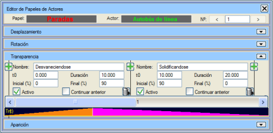
butonları, diğer herhangi iki eylem arasına veya eylem dizisinin sonuna eylem eklemeyi sağlar. Kullanıcı tarafından tanımlanabilen elemanlar şunlardır:
- İsim alanı, eylemin ne olduğunu kısaca tanımlamaya yarar.
- t0 ve Süre alanları, sırasıyla eylemin başlangıç anını ve ne kadar süreceğini belirtir. Bu zamanlar saniye cinsinden ifade edilir.
- Başlangıç ve Bitiş alanları, eylemin başında ve sonunda nesnenin şeffaflık derecesini belirtir. Şeffaflık yüzde olarak ölçülür; 0 hiç şeffaflık olmamasını (nesnenin kendisi zaten şeffaf değilse) ve 100 tam şeffaflığı (böylece görünmez hale gelir) ifade eder.
- Aktif onay kutusu, bunun gerçekleştirilmesi gereken bir eylem olduğunu belirtir, aksi takdirde aktif hale getirilene kadar yok sayılır.
- Öncekinden Devam Et onay kutusu, yeni eylemin başlangıç verisi olarak bir önceki eylemin bitiş verilerini alacağını belirtir.
- butonu eylemi siler.
Seçeneklerin altında, nesnenin şeffaflığının zamana göre değişimini gösteren yatay bir çubuk grafik görünür.
Belirme
Eğer Belirme açılır menü butonuna tıklanırsa, animasyon süresi boyunca nesnenin pencerenin bir ucundan diğerine veya merkeze doğru bir süpürme efektiyle belirmesini veya kaybolmasını sağlayacak eylemler gösterilir.
Bu tür bir eylem, uygulandığı nesne pencerenin büyük bir bölümünü kaplıyorsa anlamlıdır. Başlangıçta hiçbir eylem yoktur, ancak butonuna tıklayarak eklenebilir.
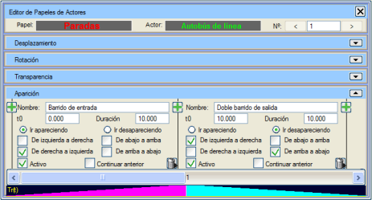
butonları, diğer herhangi iki eylem arasına veya eylem dizisinin sonuna eylem eklemeyi sağlar. Her eylemde:
- İsim alanı, eylemin ne olduğunu kısaca tanımlamaya yarar.
- t0 ve Süre alanları, sırasıyla eylemin başlangıç anını ve ne kadar süreceğini belirtir. Bu zamanlar saniye cinsinden ifade edilir.
-
Belirerek gel ve Kaybol seçenekleri, eylemin nihai sonucunun nesnenin tamamen görünmesi mi yoksa kaybolması mı olacağını belirtir.
- Soldan sağa, Sağdan sola, Yukarıdan aşağıya ve Aşağıdan yukarıya onay kutuları, nesnenin hangi yönde belireceğini veya kaybolacağını belirtir. Birkaçı, hatta hepsi işaretlenebilir. İki zıt yön işaretlenirse, her iki süpürme efekti pencerenin merkezinde birleştiğinde nesne tamamen belirir veya kaybolur.
- Aktif onay kutusu, bunun gerçekleştirilmesi gereken bir eylem olduğunu belirtir, aksi takdirde aktif hale getirilene kadar yok sayılır.
- Öncekinden Devam Et onay kutusu, yeni eylemin başlangıç verisi olarak bir önceki eylemin bitiş verilerini alacağını belirtir.
- butonu eylemi siler.
Seçeneklerin altında, nesnenin belirme durumunun zamana göre değişimini gösteren yatay bir çubuk grafik görünür.
Kameraların ve Işıkların Rol Editörü
Kameralar ve ışıklar, değişen özelliklerine bağlı olarak üç farklı türde rol üstlenebilir.
- Elemanın zaman içindeki olası konumlarını belirleyen yolları veya "kılavuzları" takip etmesi sağlanarak konumu değiştirilebilir. Referansın konumu (kameralarda bakılan nokta veya ışığın yönünü belirleyen nokta) pozisyonun hareketine teğetsel olarak eşlik eder.
- Elemanın konumu için referanstan farklı bir yol belirtilebilir.
- Yönelimi veya dönüşü değiştirilebilir.
- Aynı anda birden fazla özelliği değiştirilebilir.
Bu özelliklerden herhangi birini değiştirecek bir eylem eklemek için ilgili seçenek açılır.
Konum Ötelemesi
Eğer Konum Ötelemesi açılır menü butonuna tıklanırsa, bu nesneyi sahne boyunca hareket ettirecek eylemler gösterilir. Başlangıçta hiçbir eylem yoktur, ancak butonunu kullanarak eklenebilir.
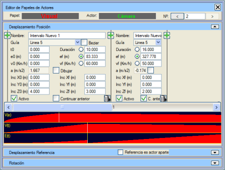
Bu resimde kullanıcı tarafından tanımlanabilen tüm elemanlar görülebilir. butonları, diğer herhangi iki eylem arasına veya eylem dizisinin sonuna eylem eklemeyi sağlar. Her eylemde:
- İsim alanı, eylemin ne olduğunu kısaca tanımlamaya yarar.
- Kılavuz alanı, nesnenin hareket etmek için takip edeceği kılavuzun seçilmesini sağlar. Bir kılavuzu takip ederken, nesnenin "ön" kısmının yönelimi kılavuza teğet olacaktır. Bezier onay kutusu, kılavuzun bir Bezier eğrisi olarak mı yoksa sadece yumuşatılmış bir çizgi olarak mı kullanılacağını belirtir.
- t0 ve Süre alanları, sırasıyla eylemin başlangıç anını ve ne kadar süreceğini belirtir. Bu zamanlar saniye cinsinden ifade edilir.
- e0 ve ef alanları, nesnenin kılavuz uzunluğu boyunca t0 anında ve bu eylem bittiğinde sahip olacağı konumu belirtir. Bu konumlar, kılavuzun ilk noktasından itibaren kılavuz üzerinde ölçülen metre cinsinden ifade edilir.
- v0 ve vf alanları, nesnenin t0 anında ve bu eylem bittiğinde sahip olacağı hızı belirtir. Bu hızlar km/sa cinsinden ifade edilir.
- a alanı sadece bilgilendirme amaçlıdır; bu eylemin yürütülmesi sırasında başlangıç hızından son hıza geçmek için gereken ivmeyi gösterir. Bu ivme sabit kabul edilir ve m/s2 cinsinden ölçülür.
- Süre, ef ve vf alanlarının yanında, diğerleri değiştirildiğinde bu 3 değerden hangisinin otomatik olarak hesaplanacağını belirten bir seçim butonu bulunur. Şu formüller takip edilir:
vf = v0 + a × t
ef = e0 + v0 × t + 0.5 × a × t2
- Yolu Çiz onay kutusu, eylem sırasında nesnenin bulunacağı noktaların sahnede gösterilmesini sağlar. Ayrıca, eylemin geçtiği tam saniyelere denk gelen konumlar farklı bir renkle ve ilgili metinle işaretlenir. Bu bilgi, bir animasyon oluşturulurken görünmez.
- Inc. X0, Inc. Xf, Inc. Y0, Inc. Yf, Inc. Z0 ve Inc. Zf alanları, nesnenin kılavuza göre olması gereken orijinal konumuna göre ötelemeleri belirtir. X'e göre ötelemeler nesnenin yatay enine ekseninde (negatifler sola doğru), Y'ye göre ötelemeler nesnenin boyuna ekseninde (negatifler geriye doğru) ve Z'ye göre ötelemeler nesnenin dikey ekseninde yapılır. Bu ötelemeler başlangıçta ve sonda farklıysa, her noktada öteleme bu iki değer arasında enterpole edilir.
- Aktif onay kutusu, bunun gerçekleştirilmesi gereken bir eylem olduğunu belirtir, aksi takdirde aktif hale getirilene kadar yok sayılır.
- Öncekinden Devam Et onay kutusu, yeni eylemin başlangıç verisi olarak bir önceki eylemin bitiş verilerini alacağını belirtir.
- butonu eylemi siler.
Seçeneklerin altında, güzergah boyunca hızın değişimini (V(e)), zamanla hızın değişimini (V(t)) ve her aralıkta kat edilen mesafenin değişimini (E(t)) gösteren üç yatay çubuk grafik bulunur.
Bu menü, kameranın veya ışığın hareketini, referans noktasının pozisyona bağlı ve teğetsel olarak hareket etmesini sağlayacak şekilde tanımlar. Bu, kamera veya ışığın bir nesneyi takip ettiği durumlarda olağan kullanımdır. Ancak, bir sonraki menüde açıklandığı gibi, referansın sabit kalması veya başka bir yolu izlemesi gibi farklı bir davranış sergilemesi de belirtilebilir.
Referans Ötelemesi
Bu menünün açılabilmesi (ve kullanılabilmesi) için Referans ayrı bir aktördür onay kutusunun işaretlenmesi gerekir.
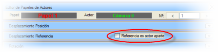
Bu menünün seçenekleri Konum Ötelemesi menüsündekilerle aynıdır ve aynı şekilde çalışır.
Döndürme
Eğer Döndürme açılır menü butonuna tıklanırsa, nesnenin kendi etrafında dönmesini sağlayacak eylemler gösterilir.
Başlangıçta hiçbir eylem yoktur, ancak butonuna tıklayarak eklenebilir.
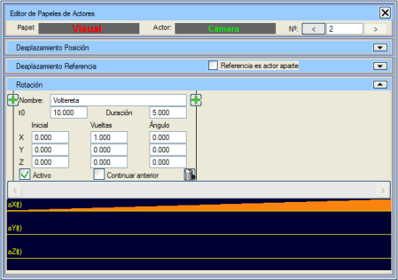
butonları, diğer herhangi iki eylem arasına veya eylem dizisinin sonuna eylem eklemeyi sağlar. Kullanıcı tarafından tanımlanabilen elemanlar şunlardır:
- İsim alanı, eylemin ne olduğunu kısaca tanımlamaya yarar.
- t0 ve Süre alanları, sırasıyla eylemin başlangıç anını ve ne kadar süreceğini belirtir. Bu zamanlar saniye cinsinden ifade edilir.
- Devamında, eylemin başlangıcında nesnenin ne kadar dönük olduğunu belirten açı ile eylem bittiğinde ulaşacağı son açıyı (tam tur sayısı + son açı) gösteren 9 adet kutucuk bulunur. Bu açılar derece cinsinden ölçülür. Her bir eksen için döndürme değerleri belirtilir. Dönüşlerin uygulanma sırası şöyledir:
- Z ekseni etrafında
- X ekseni etrafında
- Y ekseni etrafında
- Aktif onay kutusu, bunun gerçekleştirilmesi gereken bir eylem olduğunu belirtir, aksi takdirde aktif hale getirilene kadar yok sayılır.
- Öncekinden Devam Et onay kutusu, yeni eylemin başlangıç verisi olarak bir önceki eylemin bitiş verilerini alacağını belirtir.
- butonu eylemi siler.
Seçeneklerin altında, nesnenin her bir eksende zamana göre ne kadar döndüğünü gösteren üç yatay çubuk grafik görünür.
Nesne Klasörlerinin Rol Editörü
Geometrik nesne klasörleri tek bir tür rol üstlenebilir: Penceredeki belirme dereceleri değiştirilebilir.
Belirme
Eğer Belirme açılır menü butonuna tıklanırsa, nesnenin pencerenin bir ucundan diğerine veya merkeze doğru bir süpürme efektiyle belirmesini veya kaybolmasını sağlayacak eylemler gösterilir.
Bu tür bir eylem, uygulandığı klasördeki nesneler pencerenin büyük bir bölümünü kaplıyorsa anlamlıdır.
Başlangıçta hiçbir eylem yoktur, ancak butonuna tıklayarak eklenebilir.
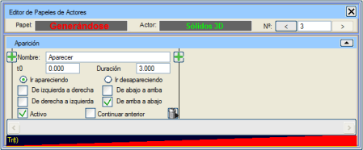
butonları, diğer herhangi iki eylem arasına veya eylem dizisinin sonuna eylem eklemeyi sağlar. Kullanıcı tarafından tanımlanabilen elemanlar şunlardır:
- İsim alanı, eylemin ne olduğunu kısaca tanımlamaya yarar.
- t0 ve Süre alanları, sırasıyla eylemin başlangıç anını ve ne kadar süreceğini belirtir. Bu zamanlar saniye cinsinden ifade edilir.
-
Belirerek gel ve Kaybol seçenekleri, eylemin nihai sonucunun nesnenin tamamen görünmesi mi yoksa kaybolması mı olacağını belirtir.
- Soldan sağa, Sağdan sola, Yukarıdan aşağıya ve Aşağıdan yukarıya onay kutuları, nesnenin hangi yönde belireceğini veya kaybolacağını belirtir. Birkaçı, hatta hepsi işaretlenebilir. İki zıt yön işaretlenirse, her iki süpürme efekti pencerenin merkezinde birleştiğinde nesne tamamen belirir veya kaybolur.
- Aktif onay kutusu, bunun gerçekleştirilmesi gereken bir eylem olduğunu belirtir, aksi takdirde aktif hale getirilene kadar yok sayılır.
- Öncekinden Devam Et onay kutusu, yeni eylemin başlangıç verisi olarak bir önceki eylemin bitiş verilerini alacağını belirtir.
- butonu eylemi siler.
Seçeneklerin altında, nesnenin belirme durumunun zamana göre değişimini gösteren yatay bir çubuk grafik görünür.
Kılavuzlar
Kılavuzlar, sahne üzerinde bir rotayı tanımlayan nokta dizileridir. Haritadan alınmış çizgiler, eksen bilgilerinden oluşturulmuş hatlar veya bu animasyon menüsünde oluşturulmuş yollar olabilirler.
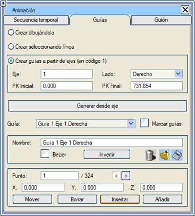
Çizerek Oluştur: 3B görüntüleyicide noktalara tıklayarak bir kılavuz oluşturma modunu başlatır. Bu moddan "Esc" tuşuna basarak çıkılır.
Çizgi Seçerek Oluştur: haritadan bir çizgiyi kılavuz olarak kullanmak üzere seçmeyi sağlar.
Sil: mevcut kılavuzu siler.
Yükle: kılavuzlar listesine bir kılavuz eklemeyi sağlar.
Kaydet: bir kılavuzu sahne dışında bir dosyaya kaydeder.
Kılavuz: mevcut tüm kılavuzları içeren seçici; seçilen kılavuzun verileri gösterilir.
Kılavuzları İşaretle: kılavuzların 3B görüntüleyicide çizilmesini sağlar.
İsim: mevcut kılavuzun ismini belirtir.
Bezier: kılavuzun noktalarının Bezier eğrilerinin düğüm noktaları olarak kabul edilmesini sağlar. Çizgi en fazla 63 köşe noktasına sahip olabilir.
Nokta: gösterilen kılavuz noktasının sıra numarasını belirtir. "<" ve ">" butonları kılavuzun noktaları arasında gezinmeyi sağlar.
Ters Çevir: kılavuzdaki noktaların sırasını tersine çevirir.
X, Y, Z: kılavuzun mevcut noktasının koordinatlarını gösterir ve ayarlar.
Taşı: mevcut noktayı 3B görüntüleyicide taşımayı sağlar.
Sil: noktayı kılavuzdan siler.
Araya Ekle: 3B görüntüleyici aracılığıyla kılavuza bir nokta eklemeyi sağlar.
Ekle: kılavuzun sonuna noktalar ekler.
Sanal 3B'ye Boykesit menüsünden girilirse, kılavuzlar eksenlerden oluşturulabilir. Her zaman enkesitlerin yüzeyindeki 1 numaralı koddan oluşturuldukları varsayılır. Bu kodun eksenin tüm kilometrelerinde mevcut olduğu ve dolayısıyla ani değişiklikler göstermediği kabul edilir. Başka kodları takip eden diğer kılavuzları oluşturmak için doğrusal proje menülerinden işlem yapılmalıdır.
Eksen: kılavuzun oluşturulacağı ekseni belirtir.
Yön: kılavuzun kilometreleri artan mı yoksa azalan sırada mı takip edeceğini belirtmek için kullanılır.
Başlangıç KM, Bitiş KM: kılavuzun oluşturulacağı kilometre aralığını belirler.
Oluştur: belirtilen verilerle kılavuzu oluşturur.
Animasyon menüsüne girildiğinde, Istram penceresinin alt kısmında (3B görüntüleyiciden yer alarak) roller arasındaki zamansal ilişkiyi görmeyi ve animasyonun görüntülenmesini yönetmeyi sağlayan bir diyalog kutusu belirir.
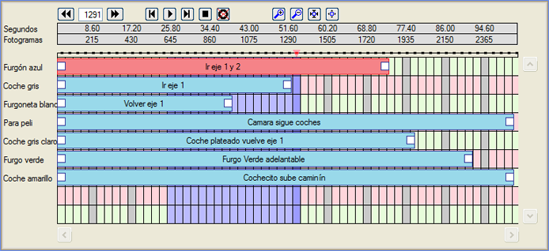
Bu diyalog kutusunda şunlar gösterilir:
- Animasyon yönetimi butonları.
- Saniye ve kare ölçekleri.
- Hem mevcut kareyi hem de "oynatılacak" bir kare aralığını seçmek için bir zaman çizgisi.
- Zaman/kare ızgarası üzerinde temsil edilen rolleri, isimleriyle birlikte. Mevcut rol kırmızı ile işaretlenir.
- Bu rolleri gerçekleştiren aktörlerin isimleri.
Butonlarla belirli bir kareye, bir öncekine, bir sonrakine, ilkine veya sonuncusuna geçilebilir. Animasyonun oynatılması başlatılabilir veya durdurulabilir. Başa dönecek şekilde durdurulabilir ve oynatmanın döngüsel olması sağlanabilir. Son butonlar, daha geniş veya daha dar bir zaman/kare aralığını göstermek ve rollerin ne zaman başlayıp bittiğini görmek içindir.
Rollerin çubukları, kaydırılarak başlangıç zamanlarının değiştirilmesine olanak tanır.
|